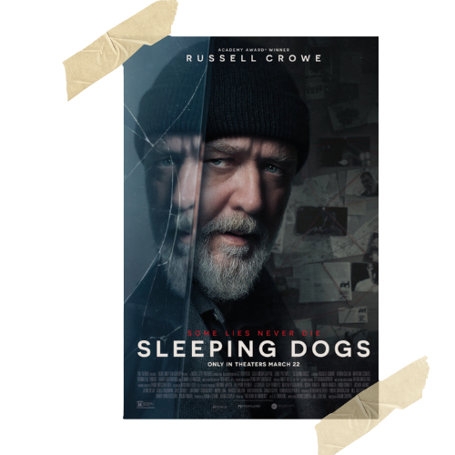

|  |
Sleeping DogsSuffering from memory loss, a former homicide detective tries to solve a brutal murder that he can't recall. As he pieces together evidence from a decade-old investigation, he soon uncovers a sinister web of buried secrets tied to his forgotten past. CastRussell Crowe, Karen Gillan, Marton Csokas, Thomas M. Wright, Harry Greenwood, Tommy Flanagan Directed byAdam Cooper Music ByDavid Hirschfelder |